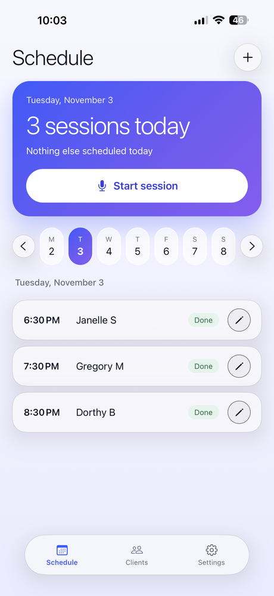
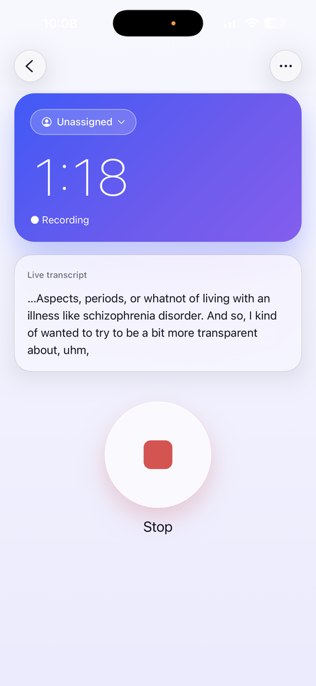
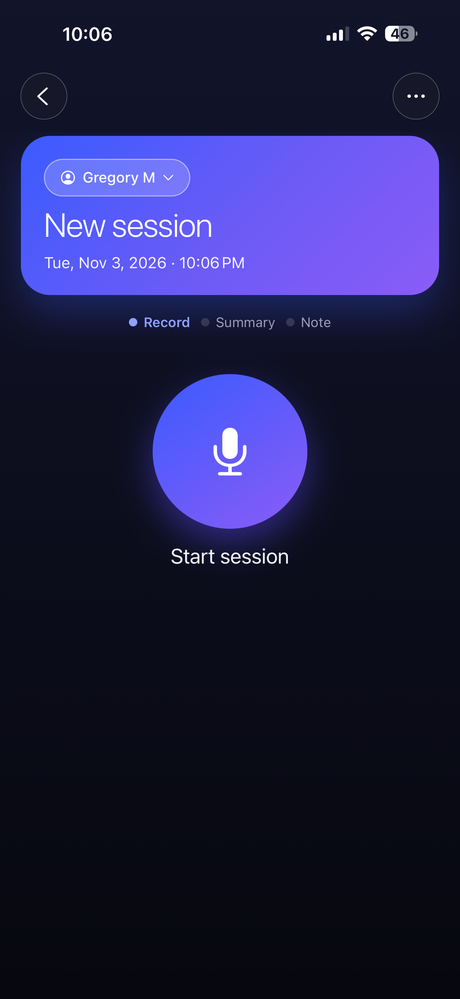
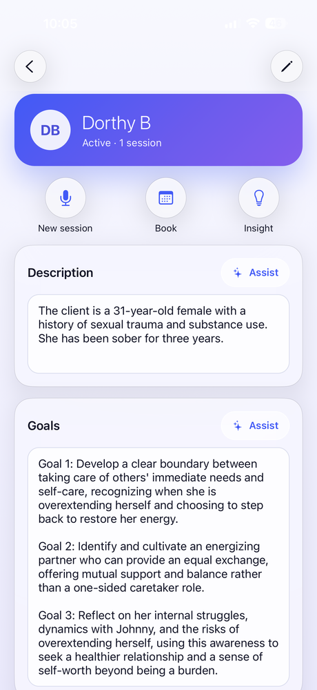
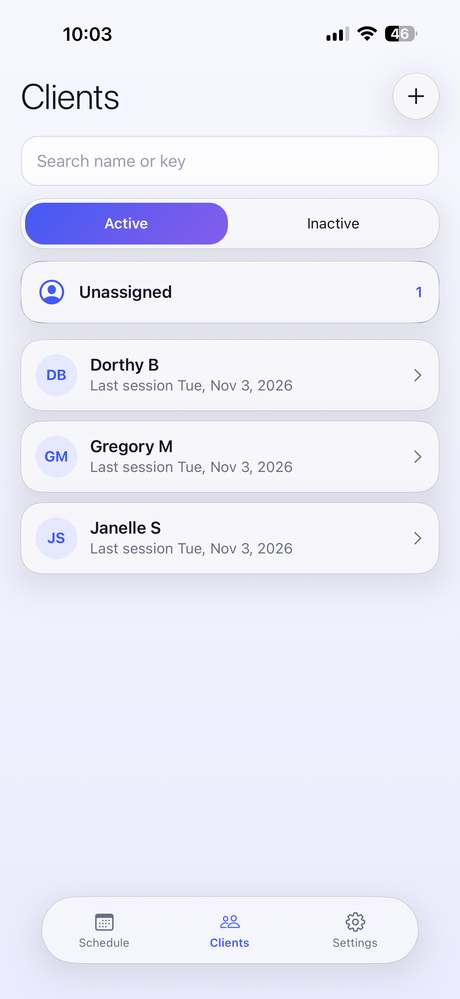
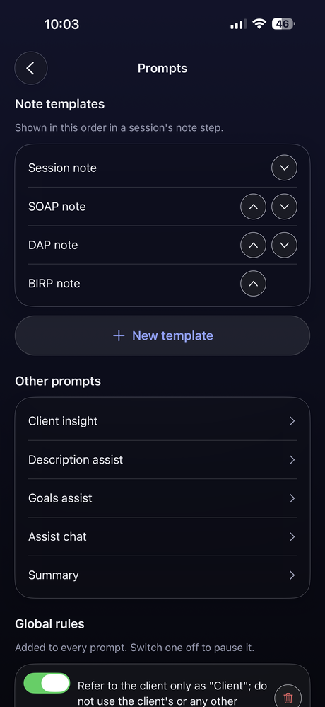
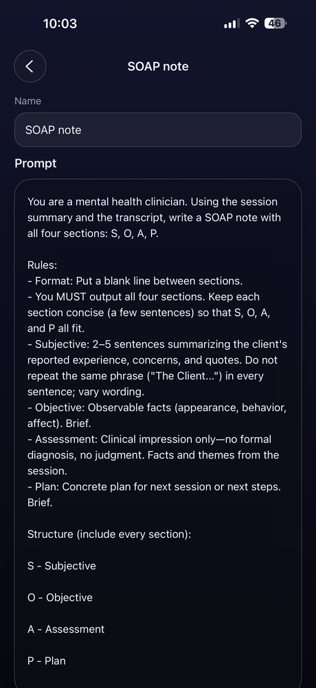
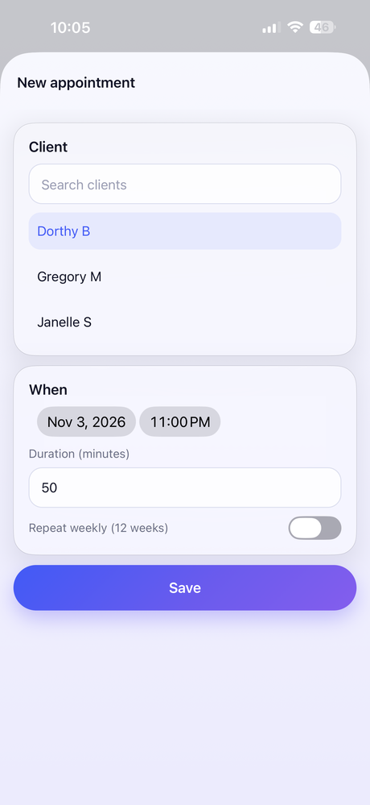
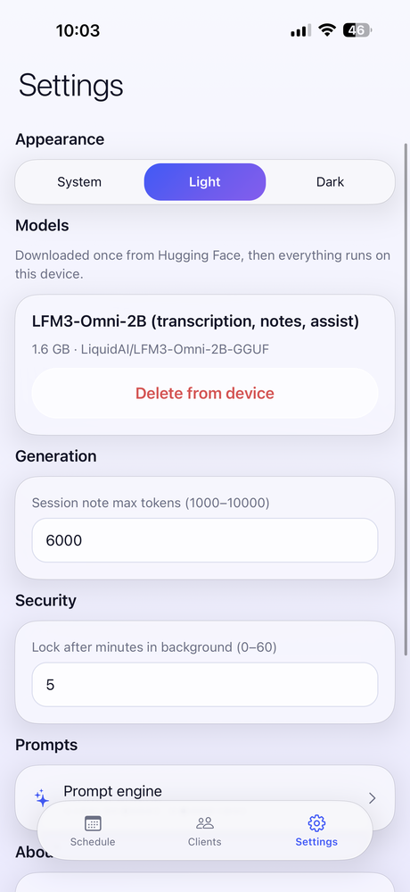
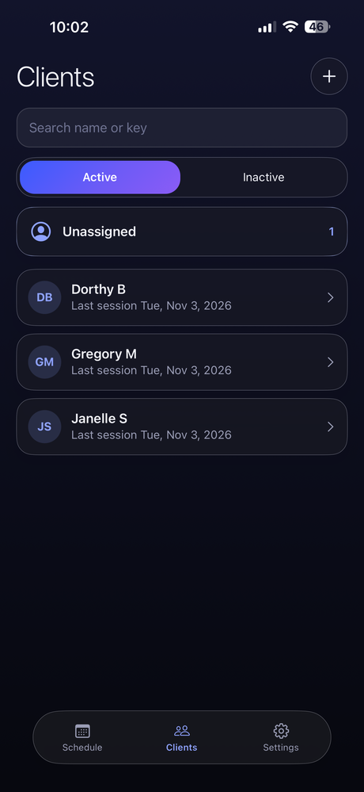

Free · Experimental · iPhone
Session notes that never leave the phone.
nano-notes is a free, experimental iPhone app that drafts session notes with on-device AI: record a session, review the summary, and get a draft SOAP, DAP, BIRP or custom note in minutes. It runs entirely on the phone, powered by Liquid AI's on-device models, so nothing about your clients ever leaves the device.
Powered by Liquid AI
One small model does everything — on the phone.
Every AI feature runs on Liquid AI's LFM3-Omni-2B, a compact model that understands speech and text. It transcribes the session by listening to the audio itself, writes the summary and the note, and powers the assistant — with no separate speech engine and no server.
Liquid's hybrid architecture keeps memory low on long sessions, which is what lets the whole workflow fit on an iPhone.
How a session works
Four calm steps, one at a time.
The session screen only shows the step you're on, so it stays out of the way while you're with a client.
Start
One button — with or without a client picked yet. Assign them any time.
Record
A big timer and a live sliver of transcript. The screen stays awake; if it locks, audio keeps saving.
Summary
Add anything to the prompt for this session, generate, then read and edit it full screen.
Note
Pick SOAP, DAP, BIRP, Session or your own template, generate from your edited summary, and save.
Features
Built around how therapists actually document.
Prompt engine
Create your own note templates, add global rules like "refer to the client only as Client", and see the full prompt before it runs.
Calendar that fills itself
Sessions link to the appointment they overlap, or get a back-dated entry automatically — your schedule always matches your notes.
Start first, assign later
Begin recording before you pick a client. Unassigned sessions wait in one place until you save them to the right person.
Client insight
Description and goals with AI assist, plus themes and changes across the last three sessions.
Locked and encrypted
Face ID or passcode lock, and an encrypted database whose key never leaves the phone's keychain.
Light and dark
A calm glass design with blue–violet gradients that follows your phone, or set it yourself.
Screens
A look inside.










Privacy
Your clients' words stay with you.
No cloud transcription, no server, no account. The only things nano-notes downloads are the AI model and app updates.
- Recording, transcription and every AI step run on the iPhone.
- Encrypted database with its key in the keychain, readable only while the phone is unlocked.
- Face ID or passcode lock after a few minutes in the background.
- Prompts refer to the client only as "Client" by default.
Disclaimer
An experiment, not a clinical product.
nano-notes is free and experimental: a demonstration of what on-device AI can do.
- Not a medical device or health record. It does not diagnose or recommend treatment, and it is not an official documentation system.
- AI output can be wrong. Transcripts, summaries and notes can be inaccurate or incomplete. Treat everything as a draft and check it yourself.
- Not your official record. Keep official notes in a system approved for that purpose.
- No compliance claims. No claim of compliance with HIPAA, PHIPA, GDPR or any other privacy or health regulation.
- Get consent before recording. Always get informed consent from everyone before recording; recording laws differ by place.
- No backup. Data lives only on the device; losing the phone or deleting the app loses it.
- Free, as is, no warranty. Use at your own risk.